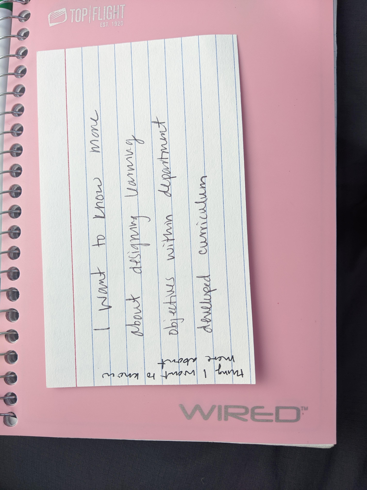
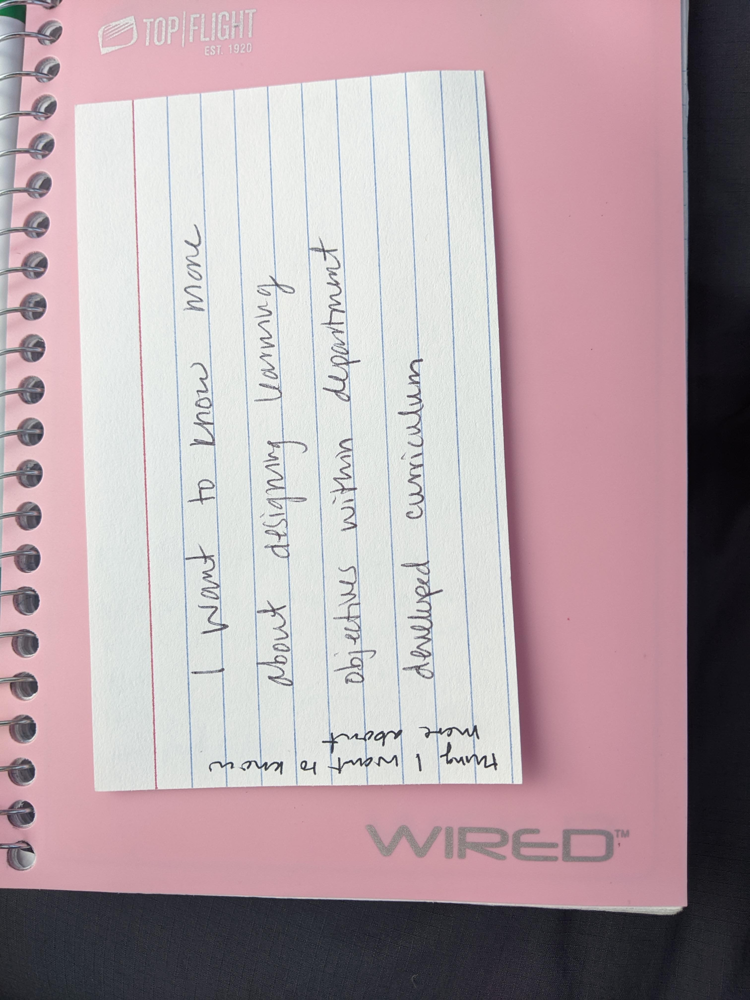
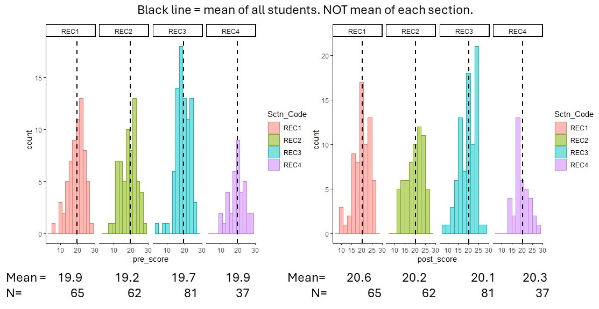
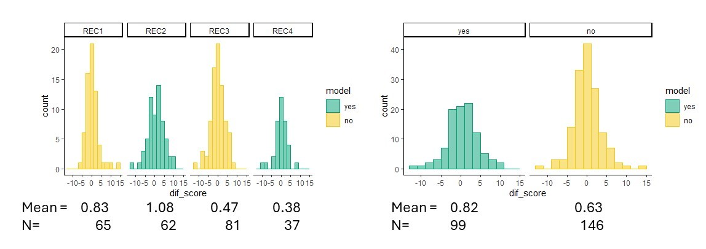
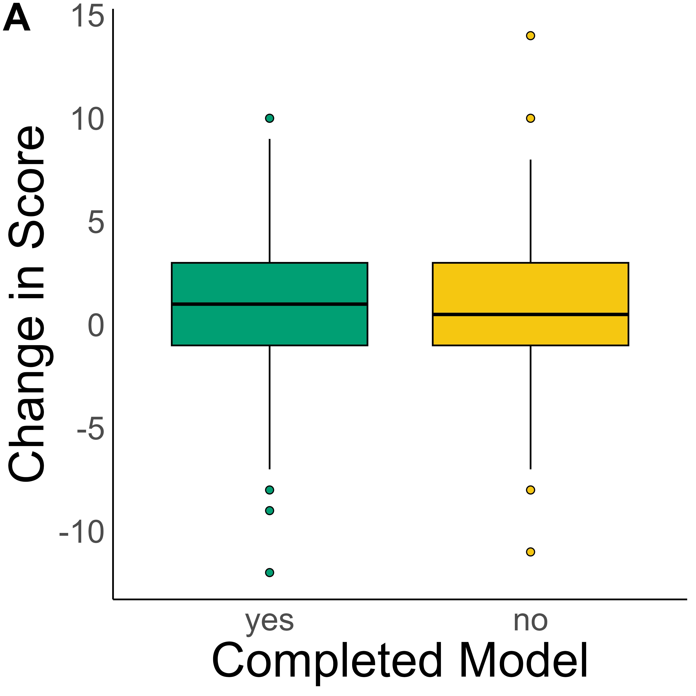
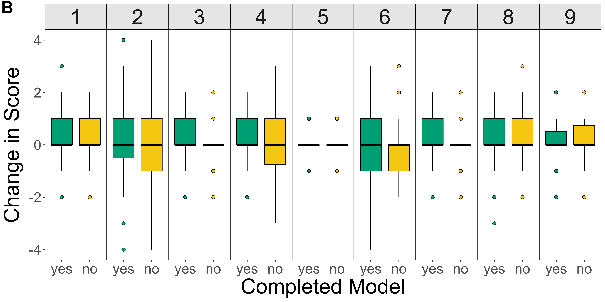
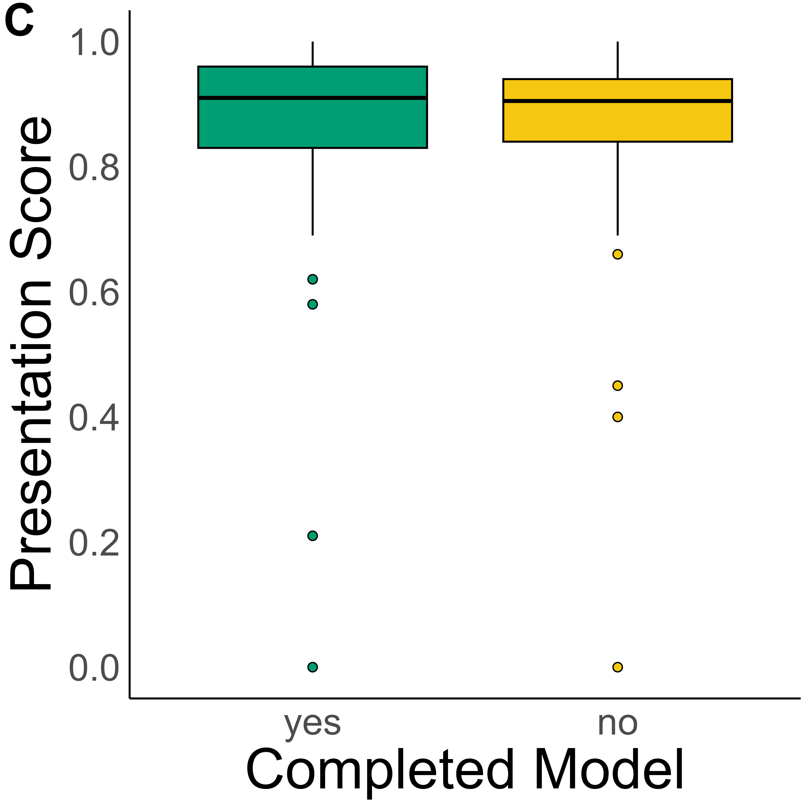
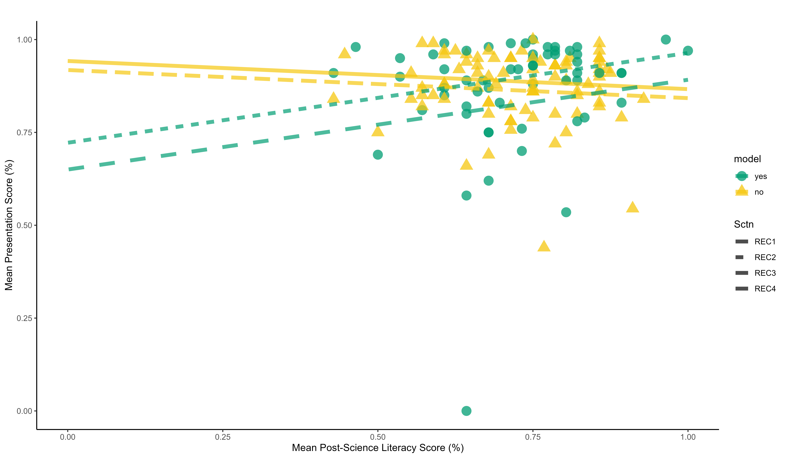

Certificate in College Teaching
Competency 1: Developing Discipline Related Teaching Strategies
To complete this competency, I took "Teaching College Science" in Spring 2024 at MSU (ISE 870). I have also completed online teaching courses including An Introduction to Evidence-Based Undergraduate STEM Teaching and Advanced Learning through Evidence-Based STEM Teaching through the CIRTL Network.
Description: Developing discipline related teaching strategies has been a goal of my graduate experience. As an educator, I want to use teaching practices that are effective and backed by evidence. Knkowledge of good teaching strategies and practice implementing them through coursework has and will continue to serve me well as a teaching assistant and in a future role as an instructor of record. Developing my teaching strategies before entering the classroom has built my confidence in front of students and expanded my toolkit of student centered activities to implement in the classroom. While many graduate students may be aware of terms such as active learning, growth mindset, cooperative learning, and inquiry based activities, compleing this competency has built my knowledge of these topics as I have read, discussed, and practiced them. I feel confidence in my ability to implement each in the classroom and in discussions with fellow educators.
In developing my teaching strategies, the CIRTL courses taught effective pedagogy backed by data collected in the classroom and the CIRTL course videos are great resources to return to as a refresher on topics. The CIRTL courses were helpful in introducing terminology that I had heard and elaborating on how experienced educators use them in their classrooms. These courses were good building blocks to prepare me for the material development I did later in ISE 870. ISE870 included demonstrations of pedagogy such as teaching through modelling and argument driven inquiry in addition to developing lesson plans using these techniques. I was also able to give a teaching demonstration for my peers, develop a syllabus, and complete lesson plans for future courses I may teach. Throughout the course, I focused my material development towards teaching genetics topics either to introductory biology students or to students in an upper-level genetics course.
Artifacts: You can find the ISE 870 Syllabus here. While this syllabus includes many partnerned activities, most were completed as individuals because of our small class size and diverse fields spanning geology and plant biology to packaging. The content covered in this course was important to provide examples of how to use different strategies in the classroom, such as how to use whiteboards to guide student activities and how to give students autonomy in completing activitis. One of the most impactful lessons from this course was in getting feedback on the assignment I created that used modelling. Prof. Oney described using models and other activities to help students discover a phenomenon rather than to reinforce a phenomenon after giving a lecture on the topic. This challenged the way I had previously planned lessons and was a foundational goal in the matierals I developed throughout the remainder of the course.
Materials Developed: During the CIRTL Introduction course, I developed a lesson plan to teach Mendelian genetics. This was particularly important because it allowed me to practice principals taught thoughout the course such as Backward Design to develop lesson plan for a course I am likely to teach in the future. This was the first time I planned a lesson for a college level course. I did find it challenging to take inspiration from past courses I have taken or beena teaching assistant for, but to improve on them by remembing that students enter the classroom with different misconceptions and the lesson should be designed with learning objectives first rather than activities I enjoy teaching. I built on these initial skills during ISE 870. In addition to developing lesson plans throughout the course that used modelling, inquiry, and problem based learning, I developed a final portfolio that includes a draft syllabus for a course I may teach in the future, two lesson plans for that course, and my teaching philosophy. In particular, creating a syllabus demonstrated that Universities and departments will have their own requirements of what to include in a syllabus. This was my first time of writing down policies for my classroom such as late work policy and my first time thinking of a syllabus from the instructor perspective rather than the student perspective. While not included in my syllabus, a shorter 'syllabus highlights' document would be helpful for students. The lesson plans I developed will be good inspiration for course design later in my career, and could be adjusted for different age levels if used in outreach activities. The comparison of lesson plan for the CIRTL course with the lesson plans included in my final portfolio illustrates my development as an educator.
Reflection: Taking both the online and in person pedagogy courses have been fundamental in my professional development as a future educator. They offered me a unique chance in graduate school to learn effective pedagogy and to practice using skills I will need in my future career before I was preparing to teach my own course. Additionally, these courses empowered me to increase my role as a TA in courses and suggest evidence-based approaches to improve aspects of class design, such as implementing collaborative group work during recitation sessions and re-writing exam quetions in genetics to be inclusive. In particular, I am excited to revise and expand the lesson plans I developed for ISE870 for use in the classroom. Taking inspiration from the requirements for this ceertificate, I added a reflectioin at the end of my lesson plans describing what went well, what was difficult about the lesson plan drafting process, and how I may adjust the lesson plan in the future. These reflections will be very valuable when I implement them in a classroom. I am thankful I took the CIRTL courses before engaging with ISE870. I feel the CIRTL courses introduced a lot of temrinology and jump started my thinking of how I would implement different techniques in the classroom. They didn't, however, push me to develop many of these activities. This is why I really enjoyed ISE870; I had built a foundation of teaching strategy knowledge and was ready to implement it by building lesson plans and a syllabus while continuing to expand my toolkit of teaching strategies. I hope to continue expanding my toolkit as a post doc by searching out new resources, assisting in course development, and further engaging with the CIRTL network.
Competency 2: Creating Effective Learning Environments
I completed the required work for this competency in May 2023 in a workshop with Dr. Kirstin Parkin during the Certificate in College Teaching Institute.
Description: Students enter the classroom with diverse prior experiences. Because of this, creating effective learning environments in important to reach students of different cultural, socioeconomic, and educational backgrounds. As emphasized in a workshop I attended about Teacher Noticing led by Shahnaz Masani, the actions of a teaching assistant or instructor in the classroom can welcome students and emphasize that their contributions are values, or can distance students from engaging in your course. Thus, creating effective learning environments is an important skill and one that will continue to develop throughout my career. To do so includes taking actions in the classroom such as those suggested in the session with Dr. Parkin, calling out microagressions that occur in my classroom, and acknowledging my role as an educator in a higher education system and country with systemic biases.
In this session, Dr. Parkin shared some of her tips for creating an inclusive learning environment for all students. These include using a QR code sto students can get slides before class without the instructor needing to upload them somewhere. QR codes can also be good ways for students to share something with the instructor during the first few days of class. On the first day of class, be sure to genuinely introduce yourself and get to know your students. She also recommends walking around the classroom and always recording class sessions. To be effective in the classroom, it is important that students know what being successful in your course will look like, and all of the course materials should prepare them for success. It is a good idea to use examples from your discpline of "final products" such as journal articles or figures to help students understand what scientists in your field work with. Dr. Parkin also touched on how to ensure out of class materials are effective for learning. My main takeaway was that prep work for class should have a low cognitive load that mainly provides guidance for students and in class work is where higher cognitive load activities should occur. While not mentioned during this session, Dr. Parkin had previously shared her recommendation for the book Grading for Equity by Joe Feldman as an additional resource to build a welcoming class.
Artifacts: The slides used in this workshop, including Dr. Parkin's annotations, can be found here. These slides will be a helpful resource when planning to teach, especially in planning for the first day of class, as either a teaching assistant or an instructor of record.
Materials Developed: You can find my notes from this session here. I also ended this session by completing a notecard activity with one thing I learned and one question I have. Reflecting on what I learned is a helpful reminder that students need guidance, especially at the beginning of the semester, but they can be more independent as the semester progresses.
 

I was inspired by Dr. Parkin and my previous experiences as a student to incorporate final products in my field into my teaching. To do this, I wrote an exam question for a genetics course that included data adapted from a published paper describing epistasis between two genes. You can find the exam question here, answers redacted. Writing this exam question was a helpful way of starting to incorporate examples of final products and real world genetics examples that students may not have seen in previous courses.
Reflection: This session talked about how to start the classroom experience by being inclusive which includes introducing yourself to students including your pronouns and sharing a bit about your life which includes your research interests and some things about your life outside the classroom. These actions can be very impactful on increasing student feelings of belonging in the classroom. We also practiced finding ways to connect the course to our research so that we can teach outside of textbooks and show students that they are building skills that professionals in their field need to be successful. Dr. Parkin’s example was using data in an immunology course so students were (through a unit) taught the importance of the axes and the different proteins that were on their and how to interpret the results. One example I could use is real Mendelian genetics data for doing epistasis; I developed this into an exam question. Another student showed an example of using a reaction norm which is another figure that would be important for students to understand and that we could teach around in ecology/evolution – important for me because my dissertation data uses many reaction norms! This would be a good final product to incorporate into my teaching next.
This session also briefly talked about flipped classrooms and that prep material should be low cognitive load and short to maintain student attention spans. However, I am curious how to encourage students to do this work by balancing some level of assigning too much that they can’t get it done but also not too little that they don’t complete the work or find it helpful.
Everything we talked about in this session can be applied to increase my teaching. In particular, I would like to be better at talking to my students like it is a conversation rather than a seminar type lecture when I am in front of a classroom. I think this will help make me more approachable to students. I also want to be intentional in identifying topics that I struggled with as a student to share that it is ok and expected to not grasp everything right away. There were also more difficult topics that we covered such as effectively flipping a classroom that are more difficult to put into practice, but what I can immediately apply is the knowledge that we can redo a class one piece at a time, so if initially the change is flipping the classroom I can start by using video resources already available on the internet (such as khan academy) and later can add in personalized for my course videos.
Competency 3: Incorporating Technology in Teaching
I completed the required work for this competency in May 2023 through the "Technology in Teaching" session with Dr. Stefanie Baier.
Description: Using technology in the classroom has become increasingly important as technological skills are valued in the workplace. While initially this competency may refer to using videos or online simulations, technology in the classroom includes using student reponse systems to gather real time knowledge about what students know and using collaborative word processing software to facilitate group work. Particularly in a time when online learning is a reality, using technology to connect students together and facilitate peer learning when not in the same geographic location is valuable. In Dr. Baier's session, I was introduced to student response systems such as iClicker and more interactive ways of using technology in the classroom like google jamboards. We were then given the context of an introductory course on ecology. As a group, we developed learning objectives and learning outcomes for the students in this course. To use technology, we designed an activity where students are shown images of different ecosystems that are impacted by humans in different ways. Students could then use a jamboard or student response system to submit ways that humans could impact each ecosystem and their services. This activity could be completed by having students write on sticky notes or shout out answers, but I think the value of the student response systems is that students will not be persuaded to change their answer to agree with their classmates after the first person posts a response, and will be challenged to come up with a response on their own. Outside of this session, a professor who has taught the same graduate level course in-person and online has reflected that there are more student responses when they answer a question in the private chat rather than shouting it out. This use of technology could allow more voices to be heard throughout the classroom.
Artifacts: Activity Instructions from Dr. Baier's session. This activity was a good way to be a student using technology to have an idea of the learning curve involved in using different technologies in the classroom, especially the first time the technology is used. It was also a helpful prompt for developing a classroom activity that uses technology, keeping in mind limitations of technologies such as limits to have many students can be active on a jamboard. These instructions illustrate some of the technology options such as audio/video, google documents, and social media, that can be used int eh classroom
Materials Developed: You can find my notes from this session here. These notes will be a helpful resource for future course design, and illustrate my learning on technology in the classroom.
Reflection: This session was really helpful to jumpstart my thinking on how I would design classroom activities when I am the instructor of record. I am still uncertain about what types of technologies work well in large verse small classrooms. iClicker seems to work well in large classrooms but jamboard has a limit of how many people can be on the board at once so it is restricted to smaller classrooms or group work. I do like that jamboard can offer some anonymity in responses. After the technology session, I want to reflect on the learning curve for students to learn a technology before they are able to use it in the classroom to make sure the technology I use enhances student learning rather than detracting. This is an addition to the point in my notes that we should use technology to achieve an objective, not just to use technology. While jamboards are cool technology, using sticky notes in the classroom may be better for small classes as students can get up and walk around the classroom to put their response in the appropriate place and it can still be anonymous. Word clouds could be other ways to use technology when introducing topics, such as "What comes to mind when you hear 'DNA'?". After this session in June 2024, I attended a presentation at the Botany 2024 conference about using podcasts in the classroom. This presentation was a great introduction to using a new technology in the classroom because listening to the podcasts are assignments, but interested students can also get involved in the podcast instruction. Recording podcasts for my courses is beyond my ability, but it was a good reminder to find ways to use technology that can incorporate students. For example, if I am recording video lectures, are there ways students can be involved? Maybe they can request topics or create their own short videos as an assignment that could be shown to future students.
Competency 4: Understanding the University Context
I completed the required work for this competency in May 2023 by attending a workshop title "The University Context" with Dr. Juddith Stoddard from MSU during the Certificate in College Teaching Institute.
Description: Understanding the University context is an important compentency for college teaching because different universities have different missions and values. Understanding the context of the University where you teach or want to teachIn this session, Dr. Stoddard emphasized understand the teaching and learning environment of each university including the physical space you teach in, the support around you, the curriculum, and the teaching resources. The material presented in this session emphasized that university context matters when applying for faculty positions and when setting up your classroom. In particular, we focused on how University mission statements are guiding documents, but they do not always match the guidelines a Univeristy has for faculty. Dr. Stoddard discussed how teaching prep work is constant, but teaching load varies between departments and appointment types so those are important elements of a job description. Additionally, faculty contracts are typically 9 months, but there are usually summer positions available.
Artifacts: This session focused on the differences between institution types and we completed an assignment analyzing mission statements and faculty evauations. These documents and the assignment were helpful in exploring the different types of institutions that hire instructors and how they differ in their values, the classroom settings, and the student population. This session also touched on teaching philosphy statements with a help sheet and a rubric; both of tese will be used to develop my teaching philosophy.
Materials Developed: You can find my notes from this session here. I also filled out a tool for preparing a teaching statement. My notes will be helpful when reading job ads and deciding if the values of an institution match my values as an educator. They are a great reminder to find out how faculty are evaluated at an institution when applying for a job. The teaching philosophy preparation activity was used when I wrote my initial teaching philosophy. See below for my current teaching philosophy.
Reflection: This information is particularly useful as a graduate student because I can explore the different unveristy contexts available, and tailor my graduate training to prepare me for a job with a univeristy context that fits my goals and teaching philosophy. In particular, this session highlighted that knowing how faculty are evaluated at the university you apply to is important in understanding the university context. It was also helpful to think about how the University context also impacts the learning environment of the students in my classroom - students all come from different places and the student population influences the university context. Parts of this session are also really useful as I begin to draft my teaching philosophy statement because I will want my teaching philosophy to use language that matches the University context I am hoping to apply to in a few years.
Competency 5: Assessing Student Learning
This competency is completed by a project I designed and implemented while a Future Academic Scholars in Teaching (FAST) Fellow during the 2022-2023 academic year. My project assessed changes in student science literacy after implementing a modeling approach to ephasize the societal context of science.
Project Summary: Science literacy refers to the skills needed to make use of scientific knowledge in real-world situations. Thus, understanding the connections between science and society is integral to increasing science literacy. Further, Gallagher (1971) argues that “understanding the interrelations of science, technology, and society may be as important as understanding the concepts and processes of science.” While increasing science literacy is often a goal of introductory biology courses, science literacy is not always assessed in the classroom and when it is, science literacy doesn’t increase after introductory biology courses (Impey et al., 2011). To address this challenge, I proposed using models to increase science literacy through a focus on the connections between classroom science and their real-world implications. By emphasizing the connections between science and society, we can also provide context to our students to illustrate the impact of science on their local community, which has been shown to increase student motivation (Bransford et al., 2000, How People Learn).
My teaching as research project asked How are scientific literacy skills and students’ ability to present their experiment results in a societal context impacted by modelling connections between experimental reasoning, results, and application in an introductory biology lab? I had three objectives in answering this question: 1. Characterize student scientific literacy near the beginning of an introductory biology lab and compare to post-course assessment of scientific literacy; 2. Analyze the impact of completing the modelling activity on increases in scientific literacy throughout the semester; and 3. Identify if students with higher scientific literacy scores were better able to present their experimental results, including a discussion of the relevance of their experiment on their local community and the scientific community, and if the modelling activity impacted this relationship.
Briefly, I found that all sections, on average, had small increases in scientific literacy, but no section has significant difference between the pre and post assessment (Fig. 1, 2). Further, I found that the modelling activity did not impact changes in overall scientific literacy or when broken down by the 9 scientific literacy skills defined by Gormally et al. (2012) (Fig 2, 3A, 3B). The modelling activity also did not impact final presentation scores (Fig. 3C). Finally, I did identify a positive relationship between student groups with high end of the semester science literacy (group mean) and higher presentation scores, but only for students who completed the modelling activity (Fig. 4). See here for greater description of analysis and results.
Figure 1. Histograms of pre- and post- scores for the science literacy survey. Each color represents a different section. Section Means and sample sizes written below each histogram. The black dotted line shows the mean of all students who completed the science literacy survey.
Figure 2. Histogram of Score Changes. Histogram by section (left) or by modelling activity (right) of the change in score between pre- and post- science literacy survey. Yellow show students who did not complete the modelling activity and green show students who did complete the modelling activity. Means and sample sizes below each image.
Figure 3. The modelling activity did not impact science literacy survey scores or presentation scores. The change in scientific literacy scores between pre- and post-surveys did not differ between students who completed the modelling activity (green, n=99) and those who did not (yellow, n=146) in overall scores (A) or when broken down by questions within each science literacy skill (B). Presentation scores also did not differ between students who completed the modelling activity and those who did not (C). All means were compared with t-tests; none were significant (minimum p-value = 0.18).
Figure 4. Post-survey science literacy weakly predicts presentation scores. Using group means (1-4 students per group), post-survey science literacy (p=0.08), completing the modelling activity (p=0.09), and their interaction (p=0.08) are weak predictors of presentations scores. Color indicates modelling (green) or no modelling (yellow). Different lines indicate each section which was included as a random effect in the model.
Overall, my teaching-as-research project illustrated that this introductory biology course did not increase student scientific literacy, and my modelling activity did not either. These results emphasize the need to assess scientific literacy consistently and to adjust teaching strategies to emphasize scientific literacy skills. One suggested change is to use the model I developed as a guide throughout the entire time students are designing their experiments and analyzing their results rather than a single activity. Note: This project was completed in Spring 2023. MSU experienced campus violence during the semester. The impact of the violence cannot be separated from the general impact of the course.
Artifacts: You can find my model describing this project here and a poster of my results here
Reflection: I found completing this teaching-as-research project to be really helpful in the development of how I think about assessing student learning. In particular, this project was a good reminder to start with simple activities. It was also really impactful to see that the general goal of increasing science literacy is not occuring in this class. I would like to use an assessment similar to the science literacy survey in my future courses to measure learning in a way that can be compared across semesters and is not tied to final grades.
Teaching Philosophy
Check out my teaching philosophy here (last updated March 2024)